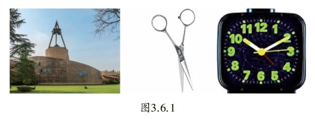
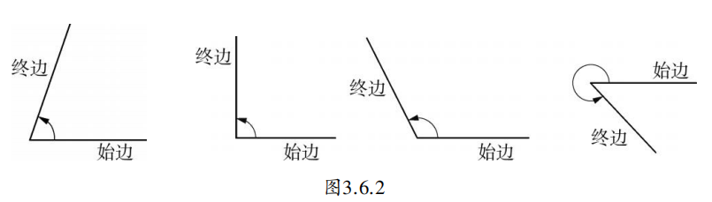
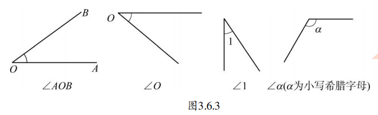
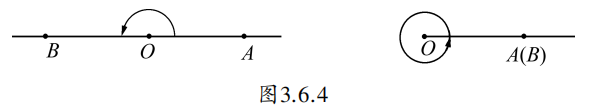
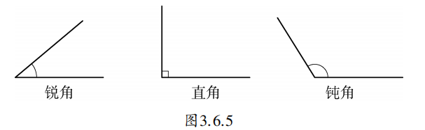
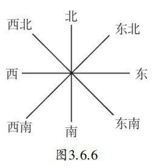
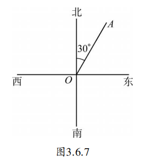
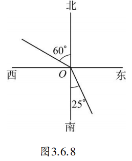

观察图3.6.1中的图形，你发现它们有什么共同的特点吗？这些图形都给出了角的形象。

在小学里，我们已学习过角（angle）的概念，角是由两条有公共端点的射线组成的图形。
如图3.6.2，角更可以看成是由一条射线绕着它的端点旋转而成的图形。射线的端点叫做角的顶点，起始位置的射线叫做角的始边，终止位置的射线叫做角的终边。

拖动滑块，观察射线旋转时角度的变化。
如图3.6.3，角可以用几种不同的方法表示。注意用三个字母表示角时，必须把表示角的顶点的字母写在中间。

在图3.6.4中可以观察到两种特殊情况：第一种情况是绕着射线的端点旋转到角的终边和始边成一条直线，这时所成的角叫做平角（straight angle）；第二种情况是绕着射线的端点旋转到终边和始边再次重合，这时所成的角叫做周角（perigon）。本册教科书中的角，除了周角和平角外，一般是指小于平角的角。

我们已经知道，如果把周角等分成360份，每一份就是1度的角，1度记作 \(1^{\circ}\) 。但是一个角的度数并不正好是整数，这时与长度单位一样，考虑用更小一些的单位进行表示。把1度等分成60份，每一份就是1分，记作 \(1^{\prime}\) ；把1分等分成60份，每一份就是1秒，记作 \(1^{\prime \prime}\) 。
\[1 \text{ 周角} = 360^{\circ}.\quad 1 \text{ 平角} = 180^{\circ}.\quad 1^{\circ} = 60^{\prime}, \quad 1^{\prime} = 60^{\prime \prime}.\]
从角的度数看，大于 \(0^{\circ}\) 且小于 \(90^{\circ}\) 的角是锐角；等于 \(90^{\circ}\) 的角是直角；大于 \(90^{\circ}\) 且小于 \(180^{\circ}\) 的角是钝角。如图3.6.5所示。

（1）把 \(18^{\circ}15^{\prime}\) 化成用度表示的角；
（2）把 \(93.2^{\circ}\) 化成用度、分、秒表示的角。
解：（1）先把 \(15^{\prime}\) 化成度，即 \(15^{\prime} = \left(\frac{15}{60}\right)^{\circ} = 0.25^{\circ}\)，所以 \(18^{\circ}15^{\prime} = 18.25^{\circ}\)。
（2）因为 \(1^{\circ} = 60^{\prime}\)，所以 \(0.2^{\circ} = 60^{\prime} \times 0.2 = 12^{\prime}\)，因此 \(93.2^{\circ} = 93^{\circ}12^{\prime}\)。
思考： \(18^{\circ}15^{\prime}\) 和 \(18.15^{\circ}\) 相等吗？哪一个较大？
\(18^{\circ}15^{\prime} = 18.25^{\circ}\)，而 \(18.25^{\circ} > 18.15^{\circ}\)，所以 \(18^{\circ}15^{\prime}\) 更大。
还记得如图3.6.6所示的八个方向吗？那是日常生活中经常用到的一些方向，如太阳从东方升起，明天将有4～5级西北风，等等。但实际上，八个方向还是不够用的。如果要准确地表示方向，那就要借用角的表示方式。

例2 如图3.6.7，\(OA\) 是表示北偏东 \(30^{\circ}\) 方向的一条射线。仿照这条射线，画出表示下列方向的射线：
(1) 南偏东 \(25^{\circ}\)； (2) 北偏西 \(60^{\circ}\)。

解： 如图3.6.8所示。

(1) 以正南方向的射线为始边，逆时针旋转 \(25^{\circ}\)，所成的角的终边即为所求的射线。
(2) 以正北方向的射线为始边，逆时针旋转 \(60^{\circ}\)，所成的角的终边即为所求的射线。
轮船、飞机等物体运动的方向与正北方向之间的夹角，即以测量点的正北方向为起始边，依顺时针方向到目标方向线之间的水平夹角称为方位角，领航员常用地图和罗盘进行方位角的测定。我们还可以以正北、正南方向为基准，描述物体运动的方向，如：“北偏东30°”“南偏东25°”“北偏西60°”。
在现代，全球定位系统（GPS）通过卫星信号实时计算方位角，为汽车导航、航海、航空提供精准的方向信息。古代的指南针和现代的手机罗盘，也都是利用方位角原理帮助我们辨认方向。
1. 根据图3.6.6填空：
(1) 正东和正西方向所成的角是____度；
(2) 正南和西南方向所成的角是____度；
(3) 东北和西北方向所成的角是____度；
(4) 正西和东南方向所成的角是____度。
(1) 180°；(2) 45°；(3) 90°；(4) 135°。
2. 用直尺画出 \(30^{\circ}\)、\(45^{\circ}\)、\(60^{\circ}\)、\(120^{\circ}\) 的角。随后用量角器量一量，比一比谁画的角最为准确。
动态思想： 将角看作射线旋转的结果，为后续学习角的大小比较、三角函数做铺垫。
数形结合： 用角度量刻画旋转量，将图形与数量联系起来。
转化思想： 度分秒之间的换算，将高级单位转化为低级单位。
应用意识： 方位角在实际生活中的应用（航海、地理、导航）。
✨ 从具体到抽象，用数学的眼光看世界 ✨